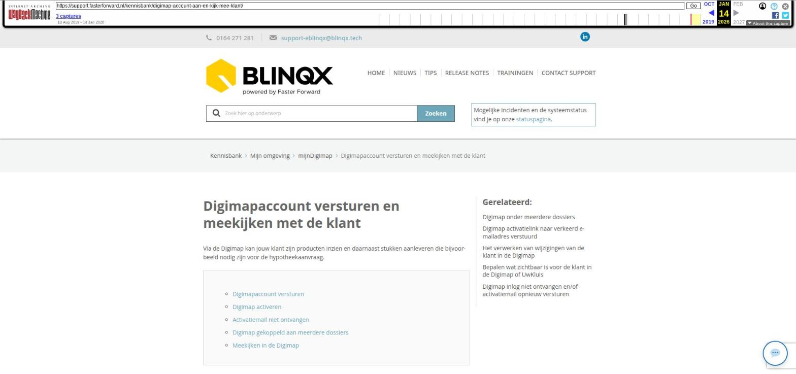

Digimapaccount versturen en meekijken met de klant

Tekstinhoud
Digimapaccount versturen en meekijken met de klant
Via de Digimap kan jouw klant zijn producten inzien en daarnaast stukken aanleveren die bijvoorbeeld nodig zijn voor de hypotheekaanvraag.
Digimapaccount versturen
Digimap activeren
Activatiemail niet ontvangen
Digimap gekoppeld aan meerdere dossiers
Meekijken in de Digimap
Digimapaccount versturen
De Digimapinlog maak je aan door de workflowstappen te volgen in de dienst van het dossier. Indien er nog geen dienst is aangemaakt, kan je hier lezen hoe je deze kunt aanmaken. Let op: het is belangrijk dat er ook een rechterdeel in de dienst is aangemaakt, anders wordt de Digimapworkflow niet opgestart.
Wanneer de dienst is aangemaakt, kan je de stappen in de workflow volgen door op de pijl achter de status te klikken. Hier krijgt je de optie ‘Digimap login aanmaken en activatiemail naar klant versturen’. Let op: de naam van en de stappen in de workflow in jouw Elementsomgeving kunnen net wat anders zijn.
Digimap activeren
Nadat je deze stap geselecteerd hebt, wordt er direct een e-mail naar jouw klant verstuurd met daarin een activatielink. Jouw klant kan zijn/haar Digimap activeren door op deze link te klikken en vervolgens een eigen wachtwoord aan te maken voor de Digimap omgeving.
Let op! de gebruikersnaam voor de Digimap is altijd het e-mailadres van de klant.
Ter informatie: de activatiemail wordt verzonden naar de eerste aanvrager in de dienst.
Indien het een organisatie betreft dan moet onder de organisatie een persoon gekoppeld zijn. Deze persoon moet als eerste aanvrager geselecteerd worden om de activitiemail te versturen. Onder deze persoon moet een e-mailadres staan.
Wanneer er niet met diensten wordt gewerkt, is het ook mogelijk om de workflow zo aan te passen dat de e-mail wordt verstuurd naar de Verzekeringnemer in een schadeverzekering. De workflow wordt dan opgestart onder de schadeverzekering.
Activatiemail niet ontvangen
Indien jouw klant de activatiemail niet ontvangt, kan je hier lezen wat er aan de hand kan zijn en hoe je de link opnieuw kan versturen.
Digimap gekoppeld aan meerdere dossiers
Ook is het mogelijk om dezelfde Digimap onder meerdere dossiers te hebben. Lees hier daar meer over.
Meekijken in de Digimap
Je kan met jouw klant meekijken in zijn/haar mijnDigimap.
Wanneer je via het klantdossier inlogt op de mijnDigimap van de klant zie je exact de mijnDigimap hoe de klant het ziet. Hoe kijk je mee?
Ga naar het klantdossier
Klik hier op tabblad export
Klik op tabblad mijnDigimap
Hier staat de mijnDigimap van de klant
Door op het oogje te klikken wordt de mijnDigimap omgeving van de klant getoond
De mijnDigimap omgeving is een pop-up. Het kan zijn dat deze wordt tegengehouden wanneer je op het oog hebt geklikt. Dit is te zien aan een icoontje in de URL-balk. Door hier op te klikken – pop-ups toe te staan – vervolgens weer op het oog te klikken, wordt de mijnDigimap omgeving geopend.
Let op: het kan zijn dat deze functionaliteit nog niet voor jouw omgeving is ingesteld. Neem in dat geval contact op met onze support medewerkers.
Onderstaand vind je de instructiefilm:
Laatste update: 21 december 2022
Tagged: digimapklantmap
Was deze informatie nuttig?
Ja Nee